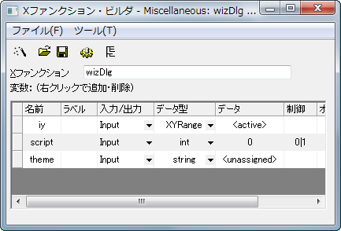
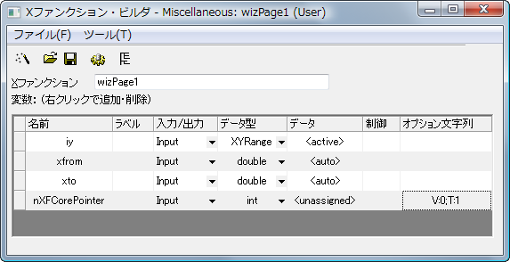
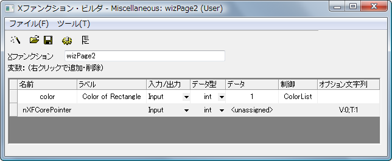

- XCore、値を保存して各ページにその値を受け渡します。
- XFWizTheme、これは各ウィザードページでテーマを設定する時に使用します。
- XFWizInputOutputRange、これは各ページの入力と出力の範囲を調整する際に使用します。
- XFWizManager、最も重要でこれから割り当てられたユーザ定義のサブクラスを持つ必要があります。ウィザードのステップを定義するのに使用します。
#ifndef __WIZ_DLG_H__ #define __WIZ_DLG_H__ #include <..\OriginLab\XFWiz.h> #include <..\OriginLab\XFCore.h> #include <..\OriginLab\WizOperation.h> #include <..\OriginLab\XFWizNavigation.h> #include <..\OriginLab\XFWizManager.h> #include <..\OriginLab\XFWizScript.h> #include <..\OriginLab\XFWizDlg.h> #include <..\OriginLab\XFWizard_utils.h> /////////////////////////////////////////////////////////////////////////// class WizDlgCore : public XFCore { public: WizDlgCore() { } void SetXRange(double from, double to) { m_dFrom = from; m_dTo = to; } void GetXRange(double& from, double& to) { from = m_dFrom; to = m_dTo; } private: double m_dFrom; double m_dTo; }; /////////////////////////////////////////////////////////////////////////// class WizDlgTheme : public XFWizTheme { }; /////////////////////////////////////////////////////////////////////////// class WizDlgInputOutputRange : public XFWizInputOutputRange { }; /////////////////////////////////////////////////////////////////////////// class WizDlgManager : public XFWizManager { public: WizDlgManager(LPCSTR lpcszThemeName = NULL, const XFWizTheme *pXFWizTheme = NULL, const XFWizInputOutputRange *pXFWizIO = NULL, DWORD dwUIDOp = 0); protected: virtual XFCore* CreateXFCore() { return new WizDlgCore; } virtual XFWizTheme* CreateXFWizTheme() { return new WizDlgTheme; } virtual XFWizInputOutputRange* CreateXFWizInputOutputRange() { return new WizDlgInputOutputRange; } virtual string GetClassName() { return "WizDlgExample"; } }; #define STR_XFNAME_PAGE_1 "wizPage1" #define STR_XFNAME_PAGE_2 "wizPage2" #define STR_LABEL_XFNAME_PAGE_1 "Page 1" #define STR_LABEL_XFNAME_PAGE_2 "Page 2" WizDlgManager::WizDlgManager(LPCSTR lpcszThemeName, const XFWizTheme *pXFWizTheme, const XFWizInputOutputRange *pXFWizIO, DWORD dwUIDOp) // = NULL, NULL, NULL, 0 : XFWizManager(lpcszThemeName, pXFWizTheme, pXFWizIO, dwUIDOp) { StringArray saMapXFNames = {STR_XFNAME_PAGE_1, STR_XFNAME_PAGE_2}; StringArray saMapXFLabels = {STR_LABEL_XFNAME_PAGE_1, STR_LABEL_XFNAME_PAGE_2}; m_saMapXFNames = saMapXFNames; m_saMapXFLabels = saMapXFLabels; ASSERT( m_saMapXFNames.GetSize() == m_saMapXFLabels.GetSize() ); m_saDefaultXFNames = saMapXFNames; } /////////////////////////////////////////////////////////////////////////// int run_wiz_nodlg(LPCSTR lpcszThemeName = NULL, const XFWizTheme *pXFWizTheme = NULL, const XFWizInputOutputRange *pXFWizIO = NULL, DWORD dwOPUID = 0) { TEMPLATE_run_wiz_nodlg(WizDlgManager, lpcszThemeName, pXFWizTheme, pXFWizIO, dwOPUID) } int open_wiz_dlg(LPCSTR lpcszThemeName = NULL, const XFWizTheme *pXFWizTheme = NULL, const XFWizInputOutputRange *pXFWizIO = NULL, DWORD dwOPUID = 0) { TEMPLATE_open_wiz_dlg(WizDlgManager, lpcszThemeName, pXFWizTheme, pXFWizIO, dwOPUID) } #endif //__WIZ_DLG_H__

#include <..\OriginLab\XFWiz.h> #include <event_utils.h> #include <..\OriginLab\WksOperation.h> #include <..\OriginLab\WizOperation.h> #include <..\OriginLab\XFCore.h> #include <..\OriginLab\XFWizNavigation.h> #include <..\OriginLab\XFWizManager.h> #include <..\OriginLab\XFWizScript.h> #include <..\OriginLab\XFWizDlg.h> #include <..\OriginLab\XFWizard_utils.h> #include <..\Originlab\wizDlg.h> // ユーザはこのサンプルのためにヘッダファイルを追加
WizDlgInputOutputRange objXFWizIO; if(!xfwiz_construct_input_range(&objXFWizIO, STR_XFNAME_PAGE_1, iy)) { XF_THROW(XFERR_FAIL_TO_UPDATE_GETN_TREE); } if( script ) { run_wiz_nodlg(theme, NULL, &objXFWizIO); } else { open_wiz_dlg(theme, NULL, &objXFWizIO); }

#include <..\Originlab\wizDlg.h> // ユーザはこの例のためにヘッダファイルを追加
WizDlgCore* pWizCore = (WizDlgCore*)get_xf_core_handler(NODE_NAME_XF_WIZ_CORE_POINTER); ASSERT(pWizCore); // X From/To をWizCore クラスオブジェクトにセット pWizCore->SetXRange(xfrom, xto);
if( PDS_AUTO == okutil_cvt_str_to_predefined_type(trGetN.xfrom.strVal) || PDS_AUTO == okutil_cvt_str_to_predefined_type(trGetN.xto.strVal) ) { DataRange dr; TreeNode trRange = trGetN.iy; okxf_resolve_tree_construct_range(&trRange, &dr); vector vx; dr.GetData(DRR_GET_DEPENDENT, 0, NULL, NULL, NULL, &vx); double from, to; vx.GetMinMax(from, to); trGetN.xfrom.dVal = from; trGetN.xto.dVal = to; }

//put additional include files here #include <..\Originlab\wizDlg.h> #include <..\Originlab\grobj_utils.h>
WizDlgCore* pWizCore = (WizDlgCore*)get_xf_core_handler(NODE_NAME_XF_WIZ_CORE_POINTER); ASSERT(pWizCore); // ページ1で指定したx from/to の値を入手 double xfrom, xto; pWizCore->GetXRange(xfrom, xto); // 入力範囲を入手 XFWizNavigation* pXFWizNavg = (XFWizNavigation*)(pWizCore->GetXFWizNavigation()); WizDlgInputOutputRange* pwizInputOutputRange = (WizDlgInputOutputRange*)(pXFWizNavg->GetXFWizInputOutputRange()); // ページ1から入力範囲を入手 Array<DataRange&> arrdr; if( pwizInputOutputRange->Get(&arrdr, STR_XFNAME_PAGE_1, true) ) { DataRange& dr = arrdr.GetAt(0); vector<uint> vUIDs; DataPlot dp; if( dr.GetPlots(vUIDs) > 0 ) { // 入力範囲から元のグラフのレイヤを入手 dp = (DataPlot)Project.GetObject(vUIDs[0]); GraphLayer gl; dp.GetParent(gl); // 長方形をグラフに追加 GraphObject go; add_rect(gl, go, xfrom, 0, xto, 0, color, 2, LN_VERTICAL, true, false); } }